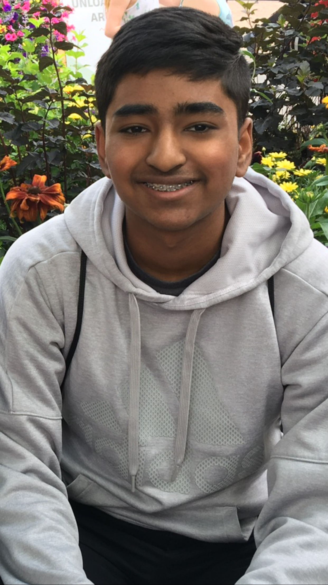

The future of technology is in the field of robotics and Artificial Intelligence. Everything I have done for the past 2 years is because of my passion for furthering the reach of technology to new heights. As an adult, I plan in pursuing a career in robotics with the goal of helping developing countries with robotics. This career choice is ideal for me because of the traits that I possess and the skills that I have developed. I am a talkative people person who has positive interactions with everyone. I am also very experienced in the field of robotics.
My strengths and personal qualities play into my love for robotics. Engineering is mostly a group activity where everyone’s ideas and opinions matter. In this group environment, I thrive because of my good intrapersonal skills. In a robotics competition that I participated in, I worked with a partner to succeed in the challenge. Instead of leading the project entirely, I set equal roles and advocated for complete creative freedom. In the end, our plan won the initial challenge and also won an award for creativity. This creative aspect of my personality is born for my love of presentation. I have participated in many performances and have won a regional competition that combined acting and engineering. Throughout high school, I have worked on many projects and participated in many competitions. In school, I worked on an HTML portfolio, a Scratch Game, and an MIT App Inventor App. By myself, I have worked on an Addiction preventing Pill Bottle and have developed a mastery in python. In a science fair, my group won second place for a contraction that used electrodialysis to filter salt out of the water. Because of my experience in a group setting, I can fit into any group with a smooth transition. I have experience as a science museum explainer and intern. I have learned to adapt to any situation and make the best of any experience. The experiences of my life tie into my love for robotics and helping people. Experiences like being an intern/manager at a museum have improved my people skills. Different robotics competition has given me the experience and knowledge necessary to be successful in the field of robotics. Thank you for reading this brief summary of my life and have fun looking at the rest of this webpage.